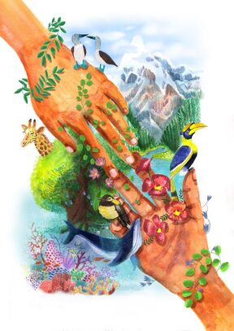

Outreach/Videos
Science outreach and communication
Here are a few science communication and crowd-funded projects I am involved with:
BrainChem (& Ecology), a popular science site I run with a Chemical Neurobiologist, Pratik Kumar.
Science Outside, a website featuring fun stories from field scientists - submit your stories to us!
Crowd-funded project on nesting hummingbirds that I am working on with Erich Eberts - a past mentee/current collaborator of mine- and other collaborators.
Crowd-funded project titled “Do hummingbirds actually sleep” I worked on with Dr. Don Powers and students.
Check out Open Explorer, an open National Geographic platform for scientists to post field notes and engage with the public.
I wrote a children’s book for Pratham’s Storyweaver

Here are three articles I wrote for Current Conservation
 |  |
| 
A city-girl field ecologist | Fun hummingbird facts | A day in the life of: Anusha Shankar
Blog article for National Geographic / Science Outside
I wrote a blog article about hummingbird torpor and why I love collecting their pee, which used to be hosted on National Geographic’s (now defunct) blog. You can find it on Science Outside.


Here’s an article in the Audubon about my research!

Publicly available videos
Oct 11, 2020 OutsideIn series from the Bangalore Life Science Cluster (BLiSC),
National Centre for Biological Sciences, Bangalore, India
From hornbills to hummingbirds: What watching wildlife can teach us about ourselves
Aug 14, 2020 ‘True Facts’ video by Ze Frank that collaborator Don Powers and I contributed to!
June 26, 2020 Madras Naturalists’ Society
How do the world’s smallest birds - hummingbirds - manage to exist?
June 25, 2020 British Ecological Society’s Ecology Live series
Spending energy unusually and flexibly: Lessons from flying ninja hummingbirds
May 28, 2020 National Geographic Explorer Classroom hangout
Seeing Science in Everyday Life with Anusha Shankar

May 11, 2020 National Geographic Explorer Classroom hangout in Spanish
La vida secreta de los colibríes con Anusha Shankar

June 28, 2019 Two American Ornithological Society videos
here and here on Diversity in ornithology
March 10, 2019 TEDx talk in my dear hometown of Chennai, India
What can hummingbirds teach us about time?
Feb 22, 2019 National Geographic Explorer Classroom hangout
Hummingbirds wet their beds, and other field curiosities
Apr 25, 2018 Stony Brook University 3 Minute Thesis
The surprising secrets of sleeping hummingbirds
Oct 21, 2016 Today I Learned, National Geographic
Hummingbirds can starve to death in hours